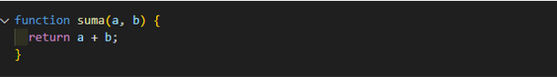
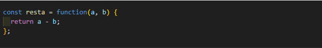

- ¿Cuál es la diferencia entre una declaración de función y una expresión de función?
Una declaración de función y una expresión de función son dos formas diferentes de definir funciones en JavaScript.
- Declaración de función:
En una declaración de función, utilizamos la palabra clave function seguida del nombre de la función y luego el cuerpo de la función entre llaves {}.
Las declaraciones de función se pueden llamar antes de que se definan, debido al hoisting de funciones en JavaScript.
EJEMPLO

- Expresión de función:
En una expresión de función, creamos una función y la asignamos a una variable o la pasamos como argumento a otra función.
Las expresiones de función no son elevadas (hoisted) como las declaraciones de función, lo que significa que solo están disponibles después de la línea en la que se definen.
EJEMPLO
